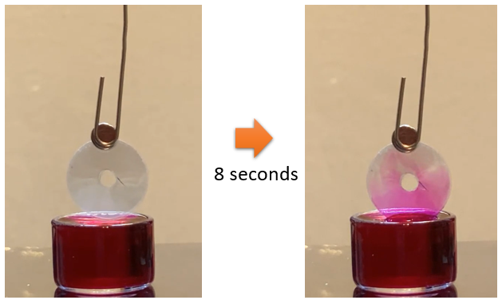
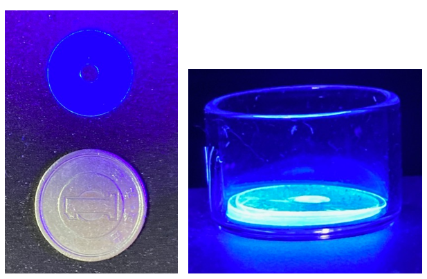
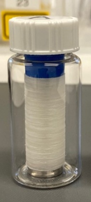
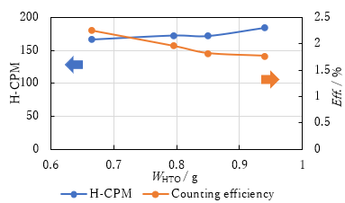
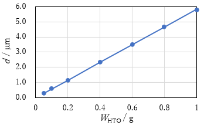
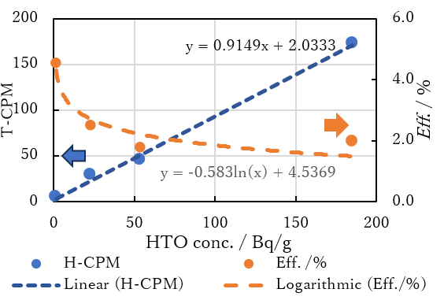
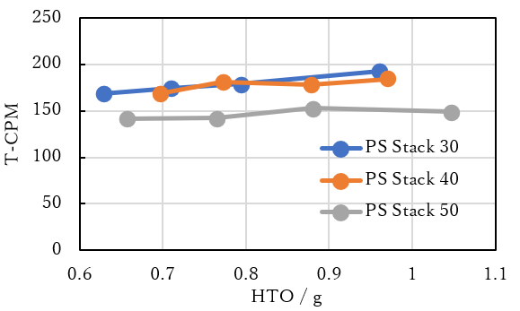
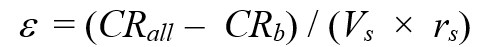
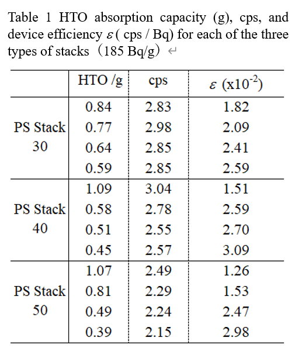

English Translation of a Japanese Proceeding on a Hydrophilic Plastic‑Scintillator‑Based Tritium Detection Device
This page presents an English translation of a paper originally published in a Japanese domestic proceeding.
The study reports the fundamental experimental results of a plastic‑scintillator‑based detection device designed for cocktail‑free, continuous monitoring of tritiated water (HTO).
The translation has been prepared by the author for broader accessibility.
Proceedings of the 26th Workshop on Environmental Radioactivity, vol. 26, P130 (2025).
https://rcwww.kek.jp/enviconf/information.html
----------------------------------------------------------------------------------------------------------------------------
Abstract
A hydrophilic plastic scintillator (PS) device was developed for cocktail‑free, continuous monitoring of tritiated water (HTO) in treated water discharged from the Fukushima Daiichi Nuclear Power Plant. Thin PS films fabricated from BC‑400 resin were plasma‑treated to enhance surface hydrophilicity and stacked to form a multilayer detection structure. Capillary‑driven water uptake between films enabled efficient contact between HTO and the scintillator. Fundamental performance was evaluated using liquid scintillation counting (LSC) by varying HTO concentration, absorbed water mass, and PS film thickness. The calibration curve exhibited good linearity from 1.5 to 185 Bq/g, with counting efficiency decreasing from 4.5% to 2.0% across this range. Among film thicknesses of 30, 40, and 50 μm, the 40 μm PS stack demonstrated the highest device efficiency. These results indicate that plasma‑treated PS stacks are a promising platform for continuous tritium monitoring without the use of liquid scintillation cocktails.
1. Introduction
The Fukushima Daiichi Nuclear Power Plant accident generated a large volume of contaminated water. After the removal of radionuclides other than tritium by the Advanced Liquid Processing System (ALPS), the Japanese government approved the discharge of the treated water into the ocean in 2023. The tritium concentration at discharge is regulated at 1,500 Bq/L, and monitoring is primarily conducted using liquid scintillation counting (LSC).
LSC requires pretreatment such as distillation of sampled water, followed by mixing with a liquid scintillation cocktail. This batch‑type method has several limitations. Although ALPS‑treated water is thoroughly diluted and homogenized, temporary increases in tritium concentration may be missed depending on sampling intervals. When seawater is present, distillation is required, delaying measurement and preventing real‑time monitoring. Furthermore, the use of organic solvents in scintillation cocktails generates organic radioactive waste, highlighting the need for a cocktail‑free continuous monitoring technique.
Several cocktail‑free approaches have been investigated, including the use of plastic scintillators (PS) [1], PS fibers [2], and inorganic scintillators such as CaF₂ [3] and GAGG [4]. While CaF₂ and GAGG are inherently hydrophilic and exhibit high light yield—especially when doped with Eu—PS offers advantages in cost, fabrication, and response speed. However, PS surfaces are hydrophobic and require hydrophilization. Low‑temperature plasma treatment is considered one of the most effective methods [5], although its hydrophilic effect often decays over time [6]. A water‑plasma method using a simple tubular reactor has been reported to maintain hydrophilicity for extended periods [6].
Based on these considerations, we fabricated a prototype tritium detection device using plasma‑treated PS films for cocktail‑free continuous monitoring of ALPS‑treated water. The detection unit consists of a multilayer stack of hydrophilized PS films (PS stack), which maximizes contact area with HTO water and enables capillary‑driven permeation between layers. In this study, we report fundamental performance evaluations of the PS stack using HTO water and LSC.
2. Experimental Methods
2.1 Plasma‑Treated PS Disks and Their Characteristics
Thin PS films were fabricated from BC‑400 cast resin (polyvinyltoluene‑based, LUXIUM) using a casting method. The resulting films measured 28 cm × 28 cm with a thickness of 30 ± 8 μm unless otherwise noted. The films were cut into 2‑cm‑wide strips and subjected to low‑temperature plasma treatment to impart hydrophilicity. Plasma treatment was performed using ion‑exchanged water as the plasma source at 120 Pa and 75 W for 1 min, irradiating both sides simultaneously. Circular PS disks (φ15 mm) with a central hole (φ3 mm) were then punched from the treated strips.
Figure 1 compares the water contact angles of untreated and plasma‑treated PS surfaces. The untreated film exhibited a contact angle of 96°, whereas the plasma‑treated disk showed a reduced angle of 41°, confirming successful hydrophilization.

Fig. 1 Comparison of contact angles of plasma untreated and treated films with water (10 μL).
To evaluate capillary behavior, six PS disks were stacked and suspended as shown in Fig. 2 (left), with their lower end immersed in a rhodamine B aqueous solution. After 8 seconds (Fig. 2, right), the solution had risen between the disks due to two‑dimensional capillary action. This capillary effect is considered essential for continuous replacement of sample water during real‑time monitoring. The hydrophilic effect of the plasma treatment remained stable for at least one month.

Fig. 2 Due to two-dimensional capillary action, rhodamine B solution enters gaps
between PS disks (completed in 8 seconds).
Figure 3 shows the scintillation behavior of a PS disk under 395‑nm UV irradiation. Stronger emission was observed along the outer circumference of the disk.

Fig. 3 Fluorescence characteristics of PS disks by UV irradiation
- The outer circumference of the PS disk primarily emits light.
2.2 PS Stack
The PS stack consists of a stainless‑steel shaft (55 mm length, 3 mm diameter, threaded), a stainless base, and a blue resin nut. A required number of PS disks are inserted onto the shaft and fixed with the nut (Fig. 4). The stack shown in Fig. 4 contains 1,000 disks and is designed to fit inside a 20‑mL vial.

Fig. 4 PS Stack loaded into a 20 mL vial.
Two methods were considered for introducing sample water into the PS stack during measurement:
immersing the entire stack in the sample solution, or
adjusting the nut tightness to control inter‑disk spacing, allowing a predetermined amount of sample water to be absorbed into the stack before placing it in the vial.
In this study, the second method was used for evaluating the intrinsic performance of the PS stack.
2.3 Absorption of HTO Water into the PS Stack
A pre‑weighed PS stack was placed in a vial, and sufficient HTO water was added to fully immerse the disks. Capillary action rapidly filled the inter‑disk gaps. The immersion time was set to 10 minutes, based on preliminary measurements showing that the absorbed mass reached constant weight within 1 minute.
After absorption, the stack was removed and held horizontally. Gradual tightening of the nut caused excess HTO water to exude from between the disks. By repeating tightening and weighing, the absorbed mass was adjusted to the target value. Four PS stacks were prepared with HTO concentrations of 1.5, 23, 54, and 185 Bq/g, with absorbed masses ranging from approximately 0.7 to 1.0 g.
2.4 LSC Measurement
Each adjusted PS stack was placed in a clean vial and measured using an ALOKA LSC‑7200 liquid scintillation counter. The measurement time was 10 minutes, repeated twice, and the average value was used. Background correction was performed using a PS stack that had absorbed ion‑exchanged water.
3. Results and Discussion
3.1 Relationship Between HTO Absorption, Counting Rate, and Counting Efficiency
Figure 5 shows the relationship among absorbed HTO mass (W_HTO), background‑corrected counting rate (H‑CPM), and counting efficiency (Eff.) for a PS stack loaded with 185 Bq/g HTO. As W_HTO decreased from approximately 1.0 g to 0.7 g, H‑CPM showed a slight decrease, whereas Eff. increased. These opposite trends are attributed to the reduction in HTO volume between disks. The decrease in H‑CPM is due to the reduced number of beta particles, while the increase in Eff. is interpreted as a higher fraction of HTO molecules located close enough to the scintillator to interact with the embedded fluor.

Fig. 5 The relationship between storage amount, H-CPM, and counting efficiency (185 Bq/g).
The scintillation detection scheme is considered as follows: beta particles emitted from HTO located on or near the disk surfaces interact with the fluor in the PS, generating scintillation light that propagates mainly toward the disk circumference and reaches the LSC photodetector through the vial wall.
The maximum and average beta energies of tritium are 18.6 keV and 5.7 keV, with corresponding ranges in water of approximately 6 μm and 0.56 μm, respectively [7, 8]. Figure 6 shows the relationship between W_HTO and the calculated water‑film thickness d between PS disks. At maximum absorption (0.94 g), d ≈ 5.5 μm, and at minimum absorption (0.66 g), d ≈ 4 μm.

Fig. 6 Relationship between water absorption capacity (WHTO/g) of PS stack
and thickness of water film between PS disks (d/μm).
Assuming a uniform distribution of HTO within the water film, the farthest HTO molecules are located at d/2 from either disk surface. For d = 5.5 μm, this distance is 2.75 μm. Only the highest‑energy beta particles can traverse this distance, whereas the majority—near the average energy—have a much shorter range (~0.56 μm). Therefore, reducing d to approximately twice the average beta range (~1.12 μm) is expected to maximize Eff. by increasing the fraction of beta particles reaching the scintillator.
Attempts were made to further reduce d by tightening the nut, but for the 1,000‑disk stack used in this study, the minimum achievable W_HTO was 0.48 g (d ≈ 3 μm). This limitation is likely due to insufficient surface flatness of the PS disks, caused by the casting substrate or burrs generated during punching. Improvements to disk flatness are currently under investigation.
3.2 Calibration Curve and Counting Efficiency
Figure 7 shows the calibration curve obtained from four PS stacks adjusted to an absorbed mass of 0.8 g and loaded with HTO concentrations from 1.5 to 185 Bq/g. The calibration curve exhibited excellent linearity across this range. Counting efficiency decreased from 4.5% at 1.5 Bq/g to 2.0% at 185 Bq/g. The increase in Eff. at low concentrations is attributed to weak interactions between hydrophilized PS surfaces and HTO molecules.

Fig. 7 Calibration curve and counting efficiency in the range of 1.5 to 185 Bq/g.
The overall counting efficiency was lower than that of conventional cocktail‑based LSC. In cocktail systems, both fluor and HTO are uniformly mixed, enabling efficient energy transfer. In contrast, in the PS stack, fluor is confined within the PS disks, and beta particles must reach the disk surface to generate scintillation, making the geometry inherently less favorable.
To investigate the effect of film thickness, PS stacks with disk thicknesses of 30, 40, and 50 μm were prepared, each adjusted to a total stack height of 30 mm. The number of disks and total surface area were 967 disks / 1708 cm² (30 μm), 758 disks / 1339 cm² (40 μm), and 625 disks / 1104 cm² (50 μm). Results for 185 Bq/g HTO are shown in Fig. 8.

Fig. 8 Relationship between PS disk thickness and T-CPM (185 Bq/g)
The 30 μm and 40 μm stacks exhibited similar T‑CPM values across the tested absorption range, whereas the 50 μm stack showed values approximately 20% lower. This difference is attributed mainly to the reduced total surface area. The ratio of surface areas between the 40 μm and 50 μm stacks closely matched the ratio of their T‑CPM values. For the 30 μm stack, increased optical scattering along the thin film likely reduced light transport efficiency.
Device efficiency *ε* (cps/Bq), defined by Sanada et al. [1] as:

was calculated for each stack, and results are summarized in Table 1. All values were on the order of 10⁻² cps/Bq, approximately two orders of magnitude higher than previously reported disk‑type PS detectors. Device efficiency increased as W_HTO decreased, consistent with the trends observed in Eff. Among the three stacks, the 40 μm PS stack exhibited the highest device efficiency.

4. Conclusion
The experimental results obtained in this study lead to the following conclusions:
The hydrophobic surface of polyvinyltoluene‑based plastic scintillator (PS) was successfully modified to a hydrophilic state by plasma treatment.
Stacked PS disks exhibited two‑dimensional capillary action, enabling rapid uptake of dyed water (rhodamine B). This mechanism is applicable to continuous replacement of tritiated water in a detection device.
The calibration curve obtained from four PS stacks showed good linearity over the range of 1.5 to 185 Bq/g. Counting efficiency decreased from 4.5% at 1.5 Bq/g to 2.0% at 185 Bq/g.
For PS stacks with a fixed height of 30 mm, the T‑CPM values followed the trend 30 μm ≈ 40 μm > 50 μm. Based on device efficiency, a film thickness of approximately 40 μm was determined to be optimal.
5. Acknowledgment
The authors express their sincere appreciation to Professor Kazuhiko Ninomiya, Director of the Radioisotope Research Center, Natural Science Center for Basic Research and Development, Hiroshima University, for his valuable support in conducting the LSC measurements.
References
[1] Y. Sanada, T. Abe, et al., “Basic study on tritium monitor using plastic scintillator for treated water discharge at Fukushima Daiichi Nuclear Power Plant,” J. Nucl. Sci. Technol., 61(5), 693–702 (2024).
[2] Y. Sanada et al., “Application of plastic scintillation fiber measurement technology to contaminated water management at Fukushima Daiichi Nuclear Power Station,” JAEA‑Research, 2016‑011.
[3] T. Kawano, H. Ohashi, et al., “Comparative testing of various flow‑cell detectors fabricated using CaF₂ solid scintillator,” Fusion Sci. Technol., 67, 404–407 (2015).
[4] H. Yamamoto et al., “Development of a continuous tritium monitoring system for ALPS‑treated water from the Fukushima Daiichi Nuclear Power Plant accident,” Advances in X‑ray Chemical Analysis, 54, 101–110 (2023).
[5] I. Adamovich et al., “The 2017 Plasma Roadmap: Low temperature plasma science and technology,” J. Phys. D: Appl. Phys., 50, 323001 (2017).
[6] Y. Iriyama, “Durability of plasma treatment effects,” Surface Science, 28(8), 459–466 (2007).
[7] H. Matsumoto et al., “Health effects triggered by tritium,” J. Radiat. Res., 62(4), 557–563 (2021).
[8] Y. Sanada, K. Oshikiri, et al., “Development of a practical tritiated water monitor,” Nucl. Instrum. Methods Phys. Res. A, 1062, 169208 (2024).